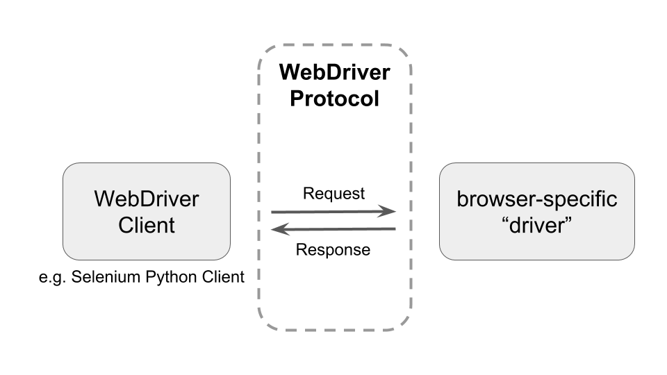
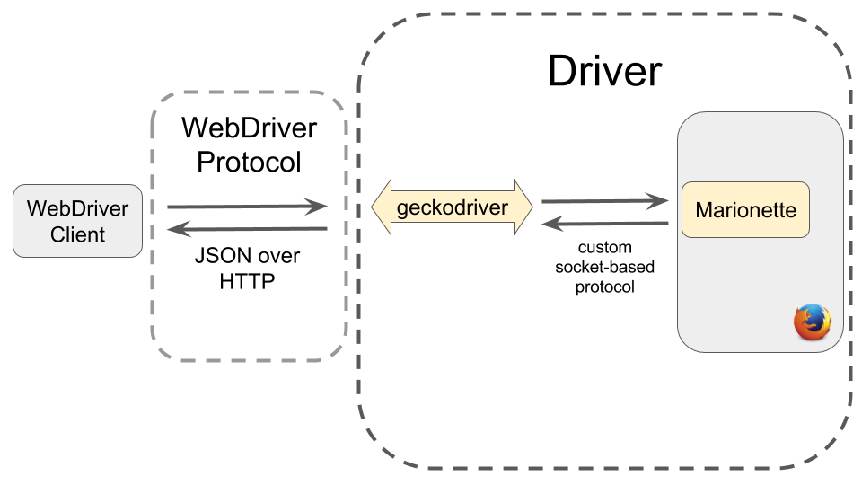

Excerpt from https://xkcd.com/1629/
Notes:
- Slides
- Mozilla, non-profit behind Firefox
- Defends the openness of the web platform
- This xkcd comic is one way to describe what I do: I work on internal tools and tools that support other tools used by web developers.
- The tools I work on are all centered around browser automation.
- I will soon explain what motivates that work.
Notes:
- First, let's agree on some context: what does browser automation look like?
- This gif is showing you an editor in the top half with some Python code describing browser behaviour for the purpose of functional tests. In the terminal window at the bottom, I run the tests.
- This causes a new browser instance to launch, load a test page, and perform a bunch of actions on the page (mostly clicks).
- The python script is simulating user interaction with the browser.
Notes:
- Now onto our motivation: what should be web be like?
- A person should be able to access all web content with any device/platform and any browser.
Notes:
- From the perspective of a web developer, cross-browser/platform support is not easy to achieve.
- The developer is less productive and is faced with a trade-off: spend my time getting this working for more users, or write some more features for just one browser/platform?
- The user suffers because they can't access content or share with everyone.
Notes:
- Another way to think about the health of the web is in terms of predictability: Surprises are bad for developers.
- A web developer's task is made harder because their code breaks in surprising ways, including regressions that pop up months after successful deployment.
- What can we do to make web development less suprising?
Notes:
- That's what web standards are all about.
- Browser vendors and other interested parties come together to negotiate common ways of interacting with the web.
- Web developers aim to follow web standards and best practices to deliver a consistent experience to as many users as possible.
- These efforts help the web stay decentralized and open to new kinds of content, new ways to participate on the web.
open instead of fragmented
Notes:
- The ideal is that anyone can come along, build something on top of this shared open platform and thereby reach all web users.
- On the other side of the spectrum, we can have lots of small pockets that don't interact. Imagine an extreme where building cross-browser web apps is pretty much impossible so that Android Opera users live in this slice of the web, whereas Windows Chrome only hang out in another part, etc.
- One example of fragmentation is the two distinct ecosystems for users of iOS and Android: App Store versus Google Play. A lot of those apps could just be web apps today, but when these platforms were first entering the market, mobile browsers weren't mature enough or consistent enough, so users were offered platform-specific apps instead.
- Another example of the side-effects of fragmentation: if you choose to
use a more affordable device, that may imply that you have access to very different web content.
Notes:
- These are the ideals that motivate our work on WebDriver
- That is, we work on browser automation because it is the basis for tools that make developing for the web easier, whether you're working on a web app or a whole browser.
Notes:
- What are these tools? As promised, we'll focus on WebDriver, which is the basis for how browser automation will work in all browsers.
- I'll also explain the relationship with Selenium, a popular open source project for automating browsers.
Notes:
- Let's get started by writing some Python code to automate Firefox.
session.get("https://www.mozilla.org/")
link = session.find_element_by_id("participate")
link.click()Notes:
- Assume
sessionrepresents some sort of magical connection to a specific browser instance.- First we make the browser navigate to mozilla.org.
- Then we search the DOM for an element with id "participate", and we tell the browser to click on that element.
Visual cue in URL bar
Notes:
- Note that remote control does not affect day-to-day use of any browser.
- There are measures in place to restrict this capability: no one wants a third party to take control over their browser.
- As an extra precaution and reminder, when remote control is enabled you
will see a modified URL bar in Firefox.- I think Chrome and Safari have a similar visual cue.
Testing...
Notes:
- Testing web apps, browser features, browser extensions
- Catch regressions: make sure my site's still working when I change it
Notes:
WebDriver could be used:
- To make web development easier (enhance developer tools)
- For browser instrumentation (screenshots on failure, performance)
- To make it easier to report, describe and investigate web compatibility bugs
- Write or generate a specific, reproducible test case.
- To make it easier to distinguish between browser bugs and web app bugs

Notes:
- WebDriver provides a communication protocol between a client and a
browser. Each kind of browser is controlled by a "driver" built for it.- There are lots of WebDriver client libraries out there, in many different languages, but I'll provide examples using the Selenium python Client.
session.get("https://www.mozilla.org/")
link = session.find_element_by_id("participate")
link.click()Notes:
- This is the same code snippet as before: it demos the Selenium Python client API.
- Note that the terms "Selenium" and "Selenium WebDriver" and "Selenium 3" are pretty-much interchangeable.
pip install selenium
export PATH=$PATH:/path/to/geckodriverAutomation script:
from selenium import webdriver
# e.g. check the web page title
session = webdriver.Firefox()
session.get("http://www.python.org")
assert "Python" in session.title
session.close()Notes
- Use a new version of Selenium WebDriver (> 3.3.1)
- geckodriver program that allows Selenium to talk to Firefox. You'll learn more about it later.
webdriver.Firefox()is starting a WebDriver session: this takes care of starting the browser in "remote control" mode, as well as, setting relevant browser prefs that are more suitable for automation such as: do not warn when closing all tabs, don't show UI tour, don't run browser updates.
Selenium WebDriver ➔ W3C WebDriver Standard
Notes:
- This browser-automation idea started a long time ago with open source software that today is called Selenium WebDriver. Originally, the Selenium community maintained both the clients and the individual drivers for each browser.
- Each browser driver has to be implemented differently in a way that best suited that particular browser. For example, FirefoxDriver was a Firefox add-on.
- The project was very popular, especially of web testing. Gradually, browser vendors started implementing their own "drivers" to receive commands from Selenium. This makes a lot of sense: it's good for the web (see all our motivation about interoperability, etc.) and it's certainly easier for browser vendors to maintain their own drivers, since they are familiar with browser internal, etc. (It's kind of amazing that the Selenium community maintained a whole bunch of browser drivers on their own for so long.)
- Then the W3C agreed that it should become a web standard so that all browsers implement WebDriver consistently. For something to become a standard, you need at least two independent implementations (✅) and a specification. The specification is pretty-much written now (✅).
What does this imply?
- Write one automation script in your favourite language
- Run your script against any/all browsers
- Now we're in a transition period: from Selenium WebDriver with old drivers to new spec-compliant divers.
POST /session/<id>/window/maximizePOST /session/<id>/elementGET /session/<id>/titleGET /session/<id>/screenshotNotes:
- This list doesn't show any payloads, see next slide.
- The
<id>refers to the WebDriver session that is connecting your client a particular browser instance. Before you send any commands, you have to establish a session. When you're done, you end the session.- We'll see examples in a moment.
- List of all commands
Request: please navigate to mozilla.org
POST /session/0152f...a9e8/url
{"url": "https://www.mozilla.org/"}Response: command was successful!
Status: 200
Data: {}Notes:
- Sending a POST request to the
urlendpoint means: "please navigate somehwere"- The command is for session
0152f...a9e8with one parameter:url = https://www.mozilla.org/- The JSON payload is
{"url": "https://www.mozilla.org/"}- If the command is successful (the navigation completes), the driver will respond with a status of 200 and no data. Note that the 200 shown here is from the driver; the HTTP server response from mozilla.org is a different concept.
How many WebDriver commands work in each browser?
Notes:
- All majors browser vendors are working on implementing the WebDriver specification.
- Firefox is the most spec-compliant now; there's a dedicated team working on it.
- There are also Web Platform Tests (see next slide) for WebDriver, which helps browsers implement the spec consistently/correctly.
Notes:
- The W3C Web Platform Tests is a suite of tests that accompany all web standards (not just WebDriver). They are shared by all browser vendors to coordinate the effort toward web predictability.
- As different browser vendors implement standards, they can contribute
tests for everyone else to use.- The tests are run against all browsers: measure how spec-compliant they are, detect when something breaks.
- Volunteer contributions are welcome.
Notes:
Now we'll take a deeper dive into the components that make the WebDriver protocol work in Firefox.

Notes:
- A WebDriver client sends JSON over HTTP to geckodriver, geckodriver translates that into a custom socket-based protocol understood by Firefox. geckodriver is written in Rust.
- Marionette is the component within Firefox that responds to WebDriver commands. It is kind of like a Firefox addon with access to privileged, internal APIs. Marionette is written in JavaScript.
Based on existing remote debugging protocol instead.
Notes:
- When initially developing Marionette, it made more sense to take advantage of an existing method to communicate with the browser rather than reinvent the wheel.
- Chrome works in a similar way.
print session.titleSend HTTP request to geckodriver
GET /session/<session id>/titleTranslate and send to Marionette
The result is a message in the format
30:[0, 21, "getTitle", null]Notes:
- 30 refers to the length of
[0, 21, "getTitle", null]- 0 is the message type (request)
- 21 is the message id
- Marionette has to respond in sequence. Responses are synchronous, sent in order, but requests are async and need to be distinguished by id.
- "getTitle" is the name of the command in Marionette
- null means there are no parameters.
(Get, "/session/{sessionId}/title",
Route::GetTitle)GetTitle => (Some("getTitle"), None)impl ToJson for MarionetteCommand {
fn to_json(&self) -> Json {
Json::Array(vec![Json::U64(0),
self.id.to_json(),
self.name.to_json(),
self.params.to_json()])
}
}Notes: these are simplified excerpts from geckodriver and a supporting library, webdriver-rust
- Map the
titleendpoint to GetTitle- Translate to a Marionette command:
getTitle- Construct a 4-part request as expected by Marionette: [0, id, name, params]
Parse stream of incoming packets (e.g. from geckodriver)
Request parsed into JSON: type, id, method, params
[0,21,"getTitle",{}]Dispatch cmd ("getTitle") to the right driver method
execute(cmd) {
let fn = this.driver.commands[cmd.name];
if (typeof fn == "undefined") {
throw new UnknownCommandError(cmd.name);
}
let rv = yield fn.bind(this.driver)(cmd, resp);
// send resp
}Notes: this is a simplified excerpt from marionette
Perform browser interaction to compute response.
function getTitle() {
return curContainer.frame.top.document.title;
}Example response: type, id, error, result
[1,21,null,{"value":"Cats in Boxes"}]Notes: excerpt from listener.js
Finally, the response is sent back, translated by geckodriver to JSON-over-HTTP:
Status: 200
Data: {"value":"Cats in Boxes"}Notes:
Most WebDriver commands are functional in Firefox -- many were implemented years ago -- but not all of them are spec-compliant yet. This is also true of other browsers: the commands work, but not consistently. By "implementing a command", I mean modifying or rewriting parts of Marionette to make it follow the WebDriver spec. It's an interesting tasks because you end up interacting with spec authors, digging into other web standards (like UI events), comparing with other browsers and trying to reconcile what the browser should actually do in response to a command.
POST /session/<id>/actions
{"actions": [{
"parameters": {"pointerType": "mouse"},
"type": "pointer",
"id": "myMouse",
"actions": [
{"type": "pointerMove", "y": 10, "x": 80,
"duration": 50},
{"type": "pointerDown", "button": 0},
{"type": "pointerUp", "button": 0}
]
}]}Notes:
- I'll describe what I had to do to implement the Actions command.
- The above request describes a sequence of steps to perform with a mouse: move the pointer to coordinates (80, 10) on the page in 50 ms, press the primary button, release the primary button.
- In general, actions commands are meant to describe a timeline of input device behaviour.
- The above shows a 1-layer timeline: just a mouse. You could instead describe many devices (many layers) doing different things simultaneously, like a mouse and keyboard, or two finders on a touch screen.
Notes:
- This small piece of the WebDriver Actions spec gives you a taste of specification language and level of detail.
Notes:
- The spec describes algorithms at a high-level
- Additional decisions left up to the implementor: data representation,
optimizations, use of programming language features.- Details, edge cases may still be missing.
Examples:
Notes:
- Typically, each test loads a document, performs a request, compares the result to what we'd expect to see if an actual human were interacting with the document.
- As a result, writing webdriver spec tests involves a mix of python (the actual test), as well as some JavaScript to introspect what's happening in the web document.
- You also need to hook up the webdriver test client to your new command.
First, parse and validate the command payload
Notes:
- See action.Sequence
action.dispatch = function (chain, ...) {
let chainEvents = Task.spawn(function* () {
for (let tickActs of chain) {
yield action.dispatchTickActions(
tickActs,
action.computeTickDuration(tickActs),
...);
}
});
return chainEvents;
};Notes:
- Excerpt from action.dispatch
- Recall our previous description of the multi-layer timeline for all input devices.
- The idea is to divide this timeline into discrete ticks (points in time) and trigger all the events for one tick simultaneously and asynchronously. When all the events for the first tick are done (keyboard, mouse, etc), then trigger all the events for the second tick, and so on.
- From the client's perspective, the action command doesn't return a response until all the events in the sequence are complete.
- This is implemented in Marionette with Promises.
Notes:
Now you have an overview of WebDriver, browser automation, why it's important for the health of the web, how it works in Firefox, and how to approach adding a new command. What can do you do with this knowledge? Work with us on fun browser bugs, help improve WebDriver, and help with web predictability!
Notes:
- Use Selenium to test your web app, report issues with detailed logs, steps to reproduce
- Documentation to try out: using geckodriver and Marionette developer setup
Notes:
- Example of adding webdriver spec tests: Bug 1357590
- A good entry point for working on spec implementation bugs is in
geckodriver issues, some of which need to be fixed in Marionette. Or if you report a new issue, you might enjoy figuring out how to fix it.- For Mozilla test-harness bugs, take a look at Bugs Ahoy
Notes:
- Achieving and maintaining web predictability is a huge amount of work
- How do you maximize progress? Eliminate friction! Make collaboration a breeze! Multiply everyone's efforts with automation!
- WebDriver enables a whole class of tools to ease all the work around web compatibility, yay.
I'm Maja Frydrychowicz. Contact: